사람이 설계하고
에이전트가 제작한다
사람은 큰 방향만 정하고, 에이전트가 스스로 '생성형 AI'를 골라
영상을 만들게 하면 어떻게 될까? — 리치킹 시네마틱 재현 실험
'생성형 AI'를 쓰는 두 가지 방법
| ① 사람이 직접 '생성형 AI'를 씀 | ② 에이전트가 '생성형 AI'를 씀 (이 실험) | |
|---|---|---|
| 누가 조작하나 | 사람이 직접 입력 | 에이전트가 대신 |
| 사람의 역할 | 하나하나 다 지시 | 큰 방향만 주고 맡김 |
| 도구 선택 | 사람이 다 고름 | 에이전트가 스스로 판단해 고름 |
| 결과 기록 | 대개 본인 머릿속 | 모든 판단이 기록으로 남음 |
이 실험은 ②번 — 에이전트에게 맡겼을 때 무슨 일이 일어나는지에 대한 기록입니다.
이렇게 4단계로 진행했습니다
※ 이 리포트에서 '에이전트' = 지휘하는 AI · '생성형 AI' = 실제로 영상을 그리는 AI 모델
스크린샷 추출
먼저 리치킹 영상(유튜브)을 보면서, 장면이 바뀌는 지점마다 스크린샷을 떠서 자료로 모았습니다.
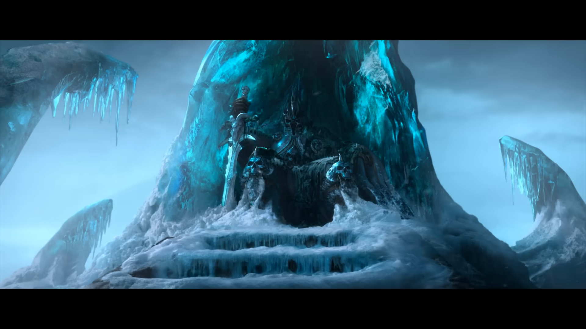
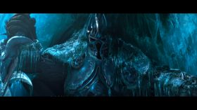
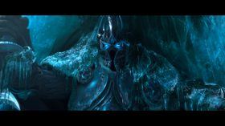
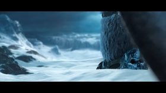
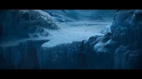
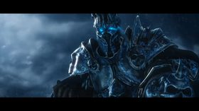
순서 배치 + 장면 설명
직접 만든 웹 도구에 이미지를 올려 시작 → 중간 → 끝 순서로 배치하고, 장면을 나눈 뒤 "이 장면에서 무엇을 만들어야 하는지"를 말로 적어뒀습니다.
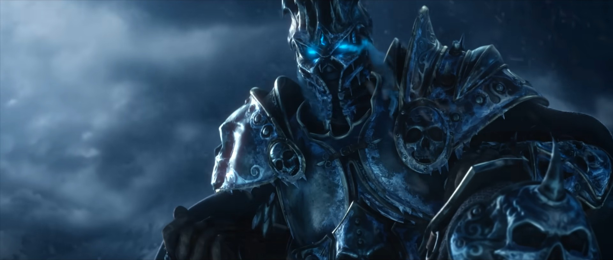
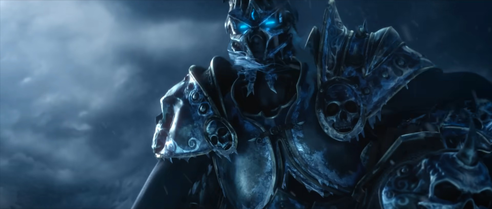

예) 이 장면의 설명 → "무릎 꿇은 자세에서 고개를 들고 → 천천히 일어난다"
장면별 제작 요청
정리한 자료를 에이전트에게 넘기고, 장면을 하나씩 만들게 했습니다. 에이전트는 장면 성격에 맞는 방법을 직접 골랐습니다.
| 장면 | 에이전트가 고른 방법 | 결과 |
|---|---|---|
| 검은 화면 | 코드로 직접 제작 ('생성형 AI' 안 씀) | 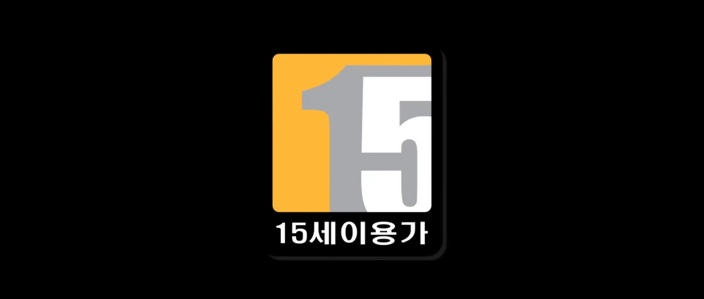 |
| 앉은 리치킹 | 이미지 한 장으로 영상화 | 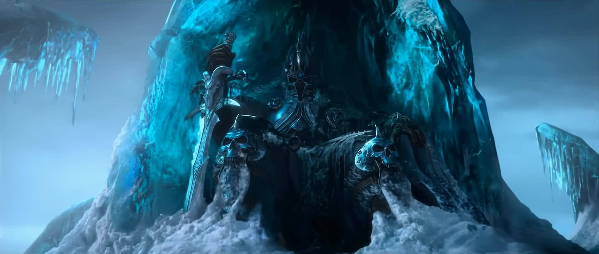 |
| 무릎→일어남 | 시작·끝 장면을 이어서 생성 | 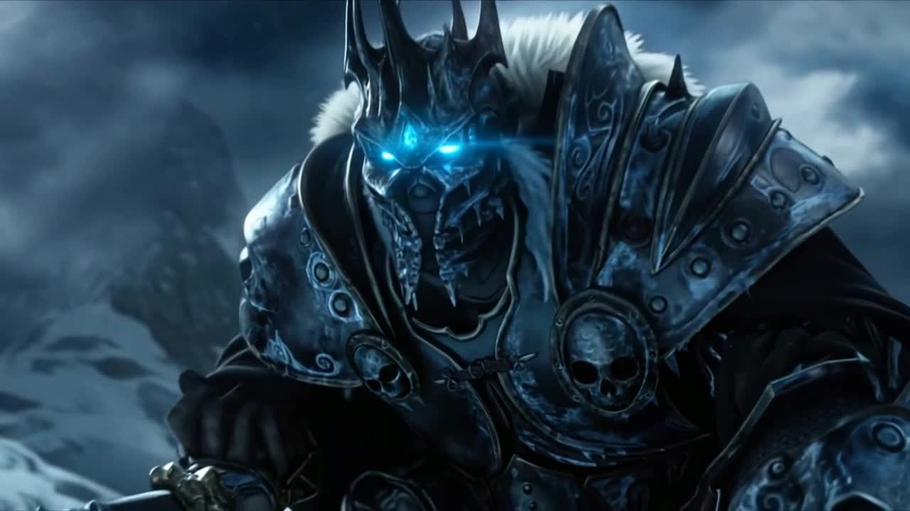 |
| 칼 뽑기 | 참고 이미지 여러 장으로 생성 | 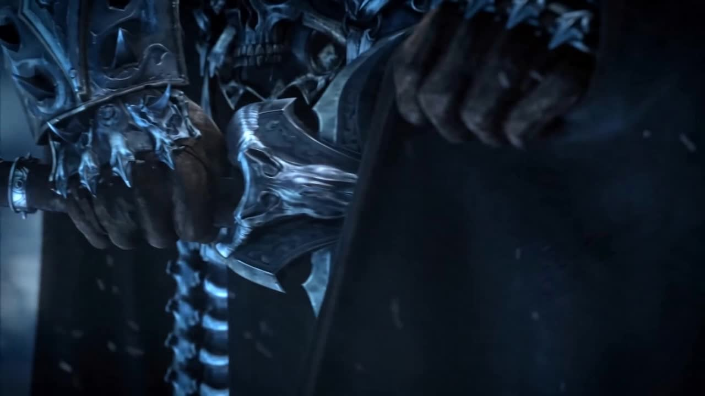 |
| 칼 들어올림 | 중간 장면을 만들어 이어 붙임 | 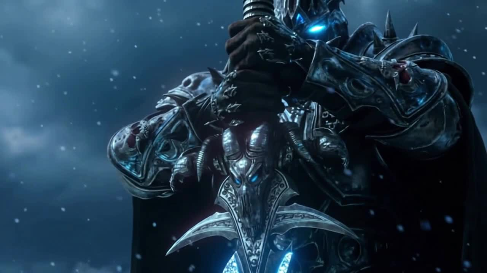 |
완성 영상
배운 5가지
- 1. 에이전트의 진짜 일은 '그리기'가 아니라 컷마다 방법을 고르는 것
- 2. 도구마다 오류가 많지만 → 한 번 기록해두면 다시는 안 틀린다
- 3. 잘못 만들어지면 → 에이전트가 스스로 원인을 찾아 고친다
- 4. 프레임 간극이 크면 → 중간 프레임을 직접 만들어 자연스럽게 잇는다
- 5. 캐릭터가 흔들리면 → '레퍼런스' 이미지로 일관성을 잡는다
장면마다 다른 방법
사람은 큰 방향만 줬는데, 에이전트는 장면 성격에 따라 완전히 다른 방법을 골랐습니다. 심지어 어떤 장면은 '생성형 AI'를 안 쓰는 게 낫다고 판단했습니다.
(단순 검은 화면)
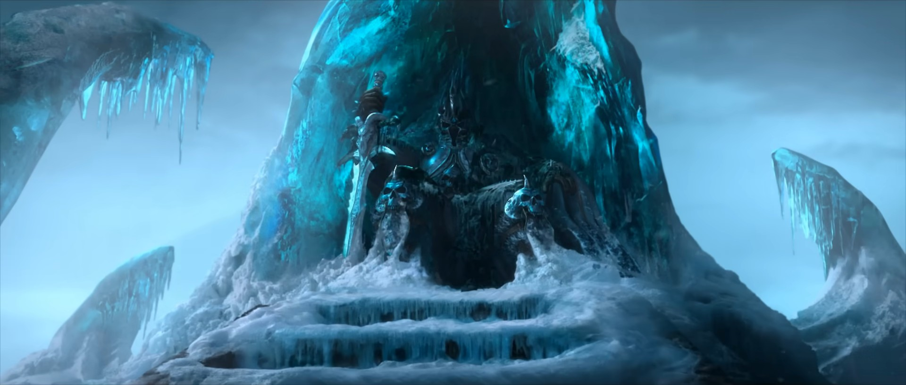
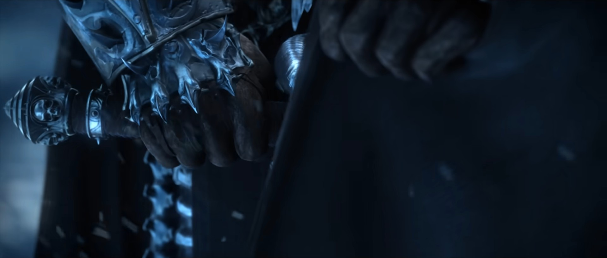
기록해서 재발 방지
도구마다 자잘한 규칙과 함정이 많았습니다. 한 번 부딪힐 때마다 문서에 기록해뒀고, 이후로는 같은 실수를 반복하지 않았습니다.
전체 200번의 시도 중 19번이 이런 오류였는데, 기록이 쌓이면서 점점 줄었습니다.
실제로 기록해둔 함정들
- 설정값을 조금만 틀려도 거부됨 (예: 해상도 표기)
- 영상 최소 길이 규칙 (안내서가 틀리게 적혀 있기도)
- 저장·다운로드 방식이 까다로움
스스로 원인 찾아 해결
칼을 들어올리는 장면에서 '생성형 AI'가 칼 방향을 자꾸 반대로 그렸습니다. 에이전트가 원인을 찾아보니 — 참고 이미지가 '아래에서 위로 올려다본 각도'라 '생성형 AI'가 방향을 헷갈린 것이었습니다.
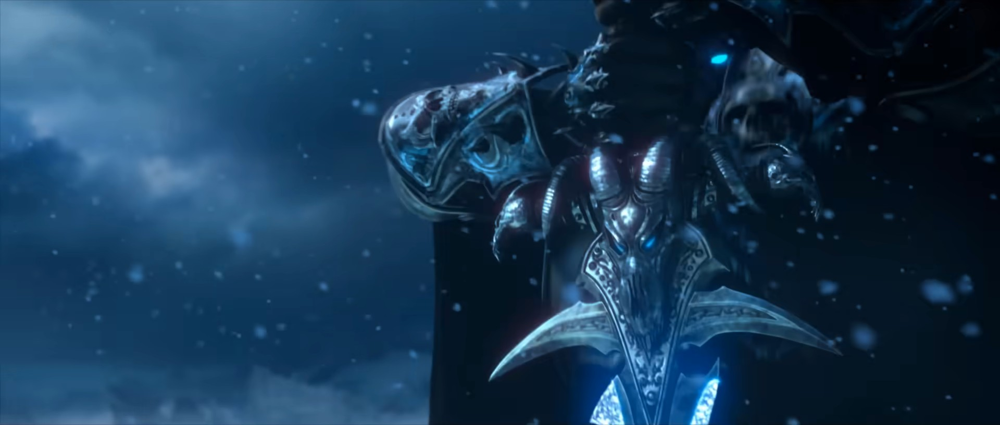
사람이 일러준 게 아니라, 에이전트가 스스로 "각도가 문제"임을 알아내 해결했습니다.
없는 장면은 직접 만들어 연결
칼이 빙판에 꽂히는 장면을 만들려면 '아직 칼이 없는 빙판'이 필요했는데, 원본 영상엔 그런 장면이 없었습니다. 그래서 에이전트가 그 장면을 '생성형 AI'로 직접 만들어, '칼 꽂힌 원본'과 이어 붙였습니다.
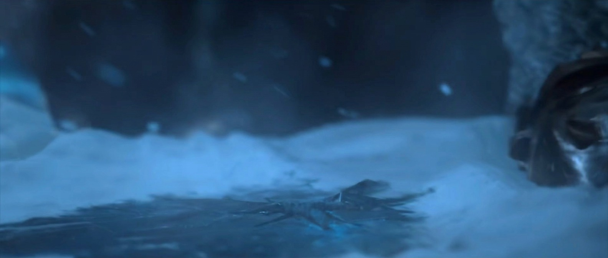
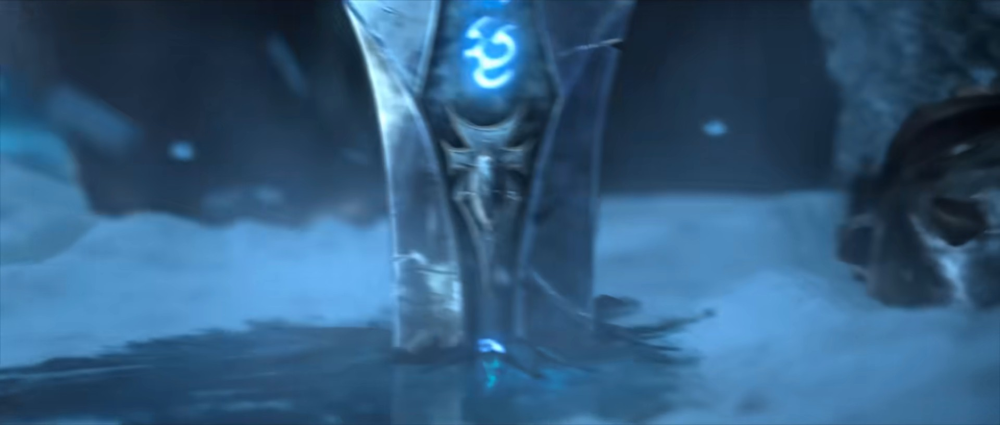
원본에 없던 중간 장면을 에이전트가 직접 만들어 넣으니, 동작이 뚝 끊기지 않고 자연스럽게 이어졌습니다.
방식을 바꿔 '서리한'을 살림
시작·끝 장면만 이어붙이는 방식으로는 서리한(검)의 긴 칼날을 못 살려 칼이 짧게 나왔습니다. 그래서 에이전트가 '서리한 형태'를 참고 이미지로 넣을 수 있는 방식으로 전환해 원작 디자인을 살렸습니다.

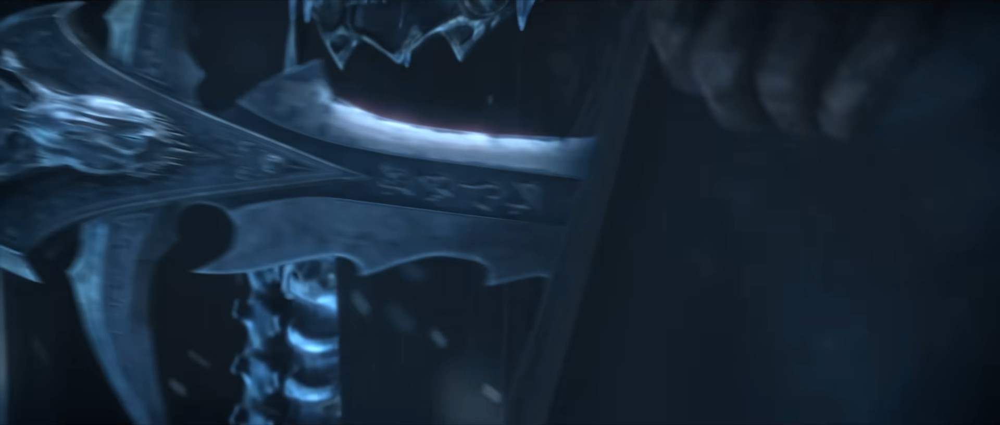
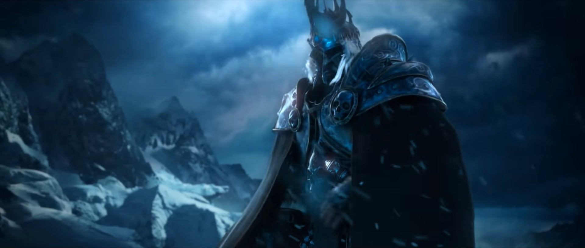
칼자루 · 칼날 · 서리한 전체 형태 (이때 '생성형 AI' 모델도 참고 이미지를 받을 수 있는 버전으로 함께 전환)Higgsfield가 'MCP'를 출시했다 조사
최근 Higgsfield가 MCP를 내놨습니다 — 에이전트(LLM)가 곧바로 연결해 이미지·영상 생성을 불러 쓸 수 있는 '통로'입니다. 브라우저로 한 번 로그인하면, 에이전트가 여러 '생성형 AI'(영상·이미지)를 직접 호출합니다. (공개 정보·오픈소스 기반 조사 — 실제 연결 시 확인 예정)
| 이번 실험에서 우리가 손으로 하던 것 | Higgsfield가 '기능'으로 제공 |
|---|---|
| 방법(모델)을 일일이 골라야 했다 | 방법 추천 기능 |
| 설정 오류로 실패했다 | 사전 검증 기능 |
| 비용이 얼마 들지 몰랐다 | 비용 미리보기 |
| 캐릭터 일관성을 손으로 잡았다 | 캐릭터 고정 기능 (Soul) |
이번에 사람·에이전트가 애써서 하던 일이, 이제 도구 안으로 들어가고 있습니다.
'에이전트에 연결하는 방식'의 대중화
'생성형 AI'도 이제 에이전트(LLM)에 연결해서, 워크플로우·모델·로직·프롬프트를 LLM이 스스로 판단하고 실행하는 방식이 점점 대중화되지 않을까.
지금까지
- 사람이 직접 도구를 열고
- 모델을 고르고, 프롬프트를 씀
앞으로
- 사람은 목표만 말하고
- 에이전트가 어떤 도구·모델·설정·프롬프트로 만들지 판단해 실행
- Higgsfield MCP 같은 '연결 통로'가 이를 뒷받침
단, '무엇이 좋은가'의 최종 판단은 계속 사람의 몫입니다.